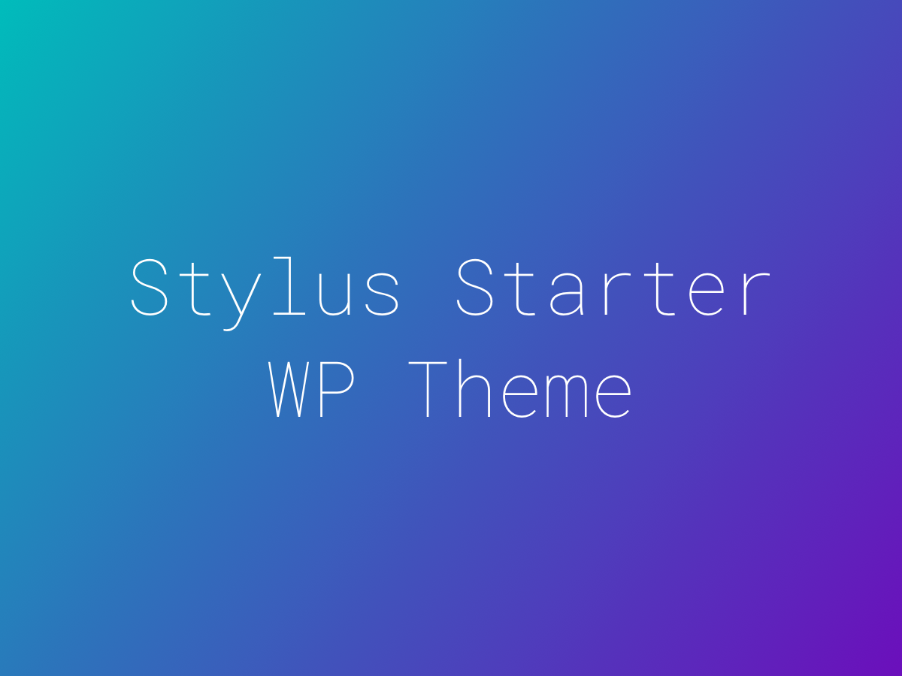

A WordPress Starter Theme Using Underscores & Stylus
WPSS is an adaptation of the bare bones starter theme, Underscores (_s). Currently the only difference you will find between this and the original is the use of Stylus rather than Sass as a preprocessor.
It comes with the optional Jeet grid system (a semantic stylus grid) and a very basic gulp file for essential task running.
Actually there’s very little to it!
### Installing the theme
Just download or clone from here and rename the directory from WPSS to something like mytheme 👈 I know, super original.
If you want to go super customized, you will also need to do a find & replace on all instances of 'WPSS' in the template files as explained here. Note, this is totally optional.
I’m pretty sure you’re discouraged from using this as a child theme, so just get right to it and start editing the files directly.
### Task Running
If you are used to using GUI pre-processors (codekit, prepos etc), just install the theme and off you go.
If you prefer to run Gulp, this package comes with a very basic gulpfile.js which will:
style.styl to style.css style.styl so there is only one file to compile)gulpfile.js)Would love to eventually:
Find a Stylus version of Bourbon Neat to use as the grid system (would be nice wouldn’t it?)
DONE: Added the Jeet grid system, a semantic grid using Stylus. Just as with Neat, this system let’s you use your own markup and classes. Check out the docs here.
Beef up the tooling a bit:
file minification & concatination
get sourcemaps working (right now every time I try it, it breaks things) DONE
maybe even some image optimization tasks?
___* yet another WordPress theme___
Keep in mind I’m just learning! I would love to get constructive feedback on anything you see here. Preferably by way of pull requests. You know, so that I can fumble through that whole process too.